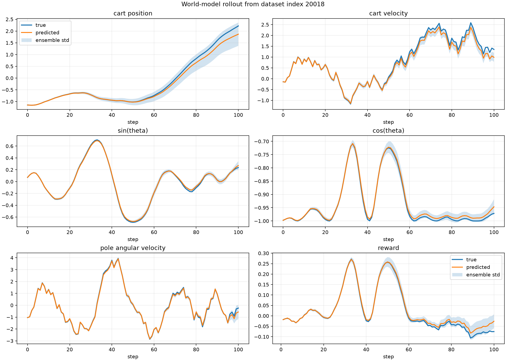
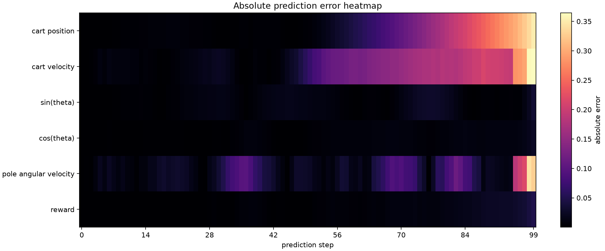
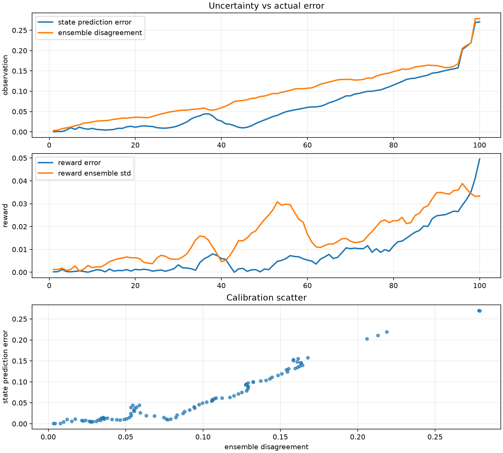
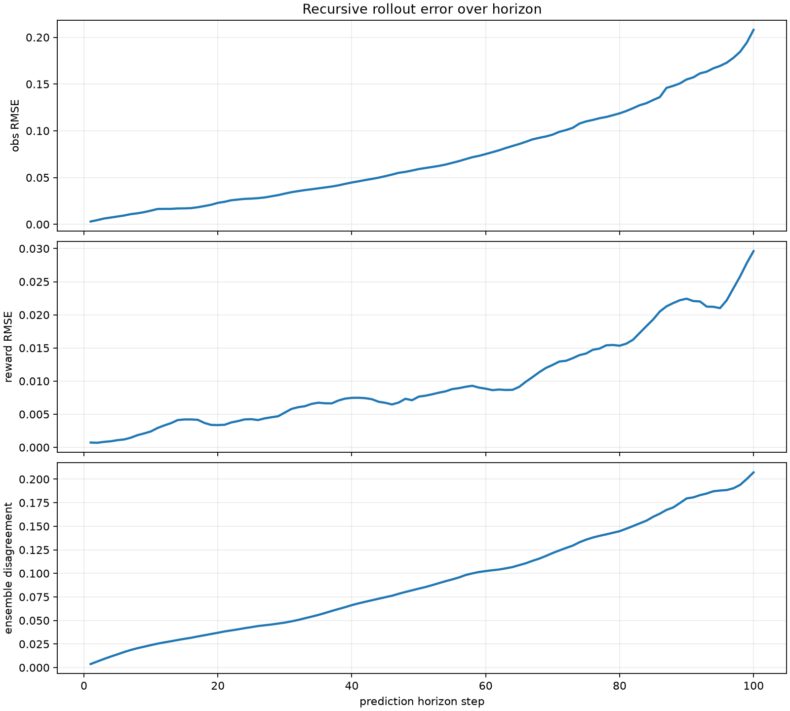

Current State
The project began as a simple MuJoCo cart-pole simulator and now has three research layers: a trained TD3 controller, a transition dataset pipeline, and a learned world model that predicts future state and reward.


System Architecture
The current architecture intentionally separates the simulator, policy, dataset, world model, and diagnostics. That separation is useful because the same data contracts can later be fed by ROS 2 sensors instead of MuJoCo.
Theory: What Each Layer Learns
TD3 Policy
TD3 learns a direct action policy. It sees the compact state vector and outputs one normalized action. The environment maps that action to cart force. TD3 is model-free: it does not learn a simulator, only a controller.
obs_t -> actor -> action_t
critic(obs_t, action_t) -> value estimateWorld Model
The current world model is observation-space, not latent-space. It predicts the next state change and reward, then rolls itself forward recursively.
[obs_t, action_t] -> [delta_obs_t, reward_t]
obs_{t+1} = obs_t + delta_obs_tWorld Model Diagnostics
Diagnostics are where the world model becomes understandable. The goal is not just low loss, but knowing where the model is reliable, where it drifts, and whether ensemble disagreement tracks actual prediction error.




Progression So Far
Build the simulator and custom environment
Created CartPoleSwingUp-v0 in MuJoCo with normalized continuous actions.
This removed the mismatch with discrete CartPole-v1 and the upright-only
termination behavior of InvertedPendulum-v5.
Train a model-free baseline
Trained TD3 with Stable-Baselines3. This gives us a working controller and a source of successful policy trajectories.
Collect transition datasets
Added dataset collection from random and TD3 policies. The first dataset contains 22,074 random-policy transitions.
Learn an observation-space world model
Added a PyTorch MLP ensemble that predicts delta_obs and reward. The
ensemble gives a first uncertainty estimate through model disagreement.
Add diagnostics and reports
Added trajectory overlays, error heatmaps, horizon-error plots, and uncertainty-vs-error plots. These make failures visible instead of hiding them behind a single loss value.
Next Immediate Step: Robust Sim Datasets
The next improvement should not be hardware yet. Before moving toward cameras or real motors, the simulator should produce a richer dataset that includes the kinds of variation the model will eventually face.
Action and sensor noise
Randomize action noise, encoder noise, velocity-estimation noise, and small observation delays.
Physical variation
Randomize cart mass, pole mass, pole length, joint damping, rail friction, actuator gain, saturation, and control delay.
Disturbances
Add external pushes, imperfect resets, failed swing-ups, recovery episodes, and noisy TD3 rollouts.
Roadmap Toward VLA and Latent World Models
| Stage | What changes | Why it matters |
|---|---|---|
| Robust dataset | Add noise, disturbances, domain randomization, noisy TD3, and recovery trajectories. | Makes future models learn a distribution of dynamics instead of a brittle clean simulator. |
| Sequence world model | Train on windows of observations and actions instead of isolated transitions. | Prepares the codebase for memory, temporal context, and transformer-style models. |
| Simulated camera | Collect MuJoCo RGB frames synchronized with state and action. | Lets us prototype vision models before dealing with physical camera noise. |
| Image-to-state model | Train a visual encoder to recover cart position and pole angle. | Builds a reliable perception bridge while state sensors still provide labels. |
| Latent world model | Predict future latent representations rather than raw pixels or raw states. | This is the natural bridge toward JEPA-style learning and scalable visual prediction. |
| VLA layer | Add goals or language as conditioning signals over vision and action, first in simulation. | Moves from a single-task controller toward instruction-conditioned behavior without risking hardware. |
| ROS 2 hardware | Replace MuJoCo data sources with synchronized encoder, camera, and motor streams. | This should come last, after robust simulation, vision diagnostics, safety wrappers, and replay tests. |
Observation Space vs Latent Space
Current model: observation-space
It predicts directly in the compact sensor-like state:
cart_position, cart_velocity,
sin(theta), cos(theta), and
theta_dot.
This is the right first model because the real cart-pole will have similar measured variables from encoders and calibration.
Future model: latent-space
A camera-based model should learn an encoder that maps images into a latent
representation z. The dynamics model then predicts future
z, not raw
pixels.
Latent prediction is closer to the JEPA family of ideas: learn useful representations by predicting abstract future structure.
What To Learn Or Use Next
RT-2, pi0, Gemini Robotics, and JEPA-style systems are useful north-star examples, but they are not the immediate implementation target for a single cart-pole. The practical learning path is to build the missing rungs between compact state modeling and large vision-language-action policies.
Near term
Domain randomization, sequence datasets, GRU/transformer dynamics, and robust uncertainty diagnostics.
Middle term
Camera-frame datasets, image-to-state encoders, JEPA-style latent prediction, and action-conditioned video/state forecasting.
Policy learning
For visuomotor policies, learn from Diffusion Policy, ACT-style action chunking, and small open VLA projects before trying to imitate RT-2/pi0-scale systems.
Future Hardware Path: Last, Not Next
The real setup can mirror the simulator contract if every hardware loop produces a timestamped observation, action, and reward proxy. But hardware should come after the simulated dataset and model stack are robust. The planned hardware stack is:
Cart sensing
Stepper position, pulley calibration, soft limits, and two endstops for homing.
Pole sensing
Rotary encoder angle and filtered angular velocity.
Control bridge
ROS 2 plus ros2_control to expose a safe action interface.
How This Connects to VLA Research
VLA systems combine vision, language, and action. RT-2, pi0, and Gemini Robotics are examples of the kind of generalist robot-policy direction we eventually care about, while JEPA-style work points toward predictive latent representations. For this repo, those are orientation points, not immediate dependencies.
The local cart-pole project is deliberately smaller, but the research shape is compatible: collect synchronized trajectories, learn predictive representations, add vision, add goals, then add language as a conditioning layer.
- Google DeepMind RT-2 overview and RT-2 paper.
- Physical Intelligence pi0 overview and pi0 paper.
- Gemini Robotics model family and Gemini Robotics-ER for current embodied-reasoning references.
- Meta V-JEPA research page and V-JEPA 2 paper.
- Diffusion Policy project for a practical visuomotor policy-learning direction.
- OpenVLA, openpi, and LeRobot are useful open-source ecosystems to study after the sim dataset is stronger.
Runbook
Train and evaluate the current world model
uv run cartpole-robot-collect \
--episodes 200 \
--policy random \
--output datasets/swingup_random.npz
uv run cartpole-robot-world-train \
--dataset datasets/swingup_random.npz \
--output world_models/cartpole_swingup_ensemble.pt
uv run cartpole-robot-world-eval \
--dataset datasets/swingup_random.npz \
--model world_models/cartpole_swingup_ensemble.ptRegenerate the diagnostics
uv run cartpole-robot-world-viz \
--dataset datasets/swingup_random.npz \
--model world_models/cartpole_swingup_ensemble.pt
uv run tensorboard --logdir runs